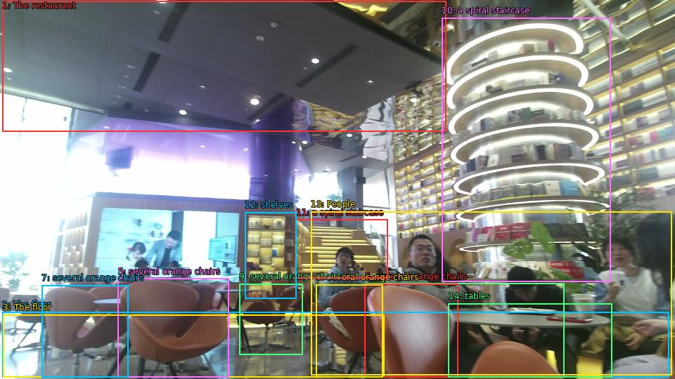

The image shows the interior of a modern restaurant or cafe. The restaurant has a high ceiling with recessed lighting and large windows that let in natural light. The floor is made of marble tiles and there are several orange chairs and tables scattered throughout the space. On the right side of the image, there is a spiral staircase that leads up to the second floor. In the background, there are shelves with various items on display. People are sitting at the tables and enjoying their meals. The overall atmosphere of the restaurant is cozy and inviting.

Original · Caption raw · Grounding raw · Koordinate
Številke so lokalni ID regije. Dolge slikovne oznake so skrajšane; spodaj so celotne fraze. Napovedane regije se lahko prekrivajo ali opisujejo skupine.
| ID | Celotna fraza | bbox xyxy |
|---|---|---|
| 1 | The restaurant | [3.359999895095825, 1.8900001049041748, 634.0799560546875, 187.11000061035156] |
| 2 | The floor | [3.359999895095825, 444.1500244140625, 951.8399658203125, 537.5700073242188] |
| 3 | The floor | [4.319999694824219, 448.47003173828125, 546.719970703125, 537.5700073242188] |
| 4 | several orange chairs | [518.8800048828125, 403.6500244140625, 802.0799560546875, 537.5700073242188] |
| 5 | several orange chairs | [167.51998901367188, 396.6300048828125, 325.91998291015625, 537.030029296875] |
| 6 | several orange chairs | [518.8800048828125, 404.19000244140625, 651.3599853515625, 537.030029296875] |
| 7 | several orange chairs | [59.03999710083008, 406.3500061035156, 182.87998962402344, 537.030029296875] |
| 8 | several orange chairs | [449.7599792480469, 405.27001953125, 544.7999877929688, 537.030029296875] |
| 9 | several orange chairs | [340.32000732421875, 404.19000244140625, 430.55999755859375, 505.71002197265625] |
| 10 | a spiral staircase | [628.3200073242188, 25.110000610351562, 868.3200073242188, 401.4900207519531] |
| 11 | a spiral staircase | [420.9599914550781, 312.9300231933594, 551.5199584960938, 396.6300048828125] |
| 12 | shelves | [348.0, 302.1300048828125, 421.91998291015625, 425.2500305175781] |
| 13 | People | [442.0799865722656, 301.0500183105469, 955.6799926757812, 534.8699951171875] |
| 14 | tables | [637.9199829101562, 432.27001953125, 870.239990234375, 537.030029296875] |